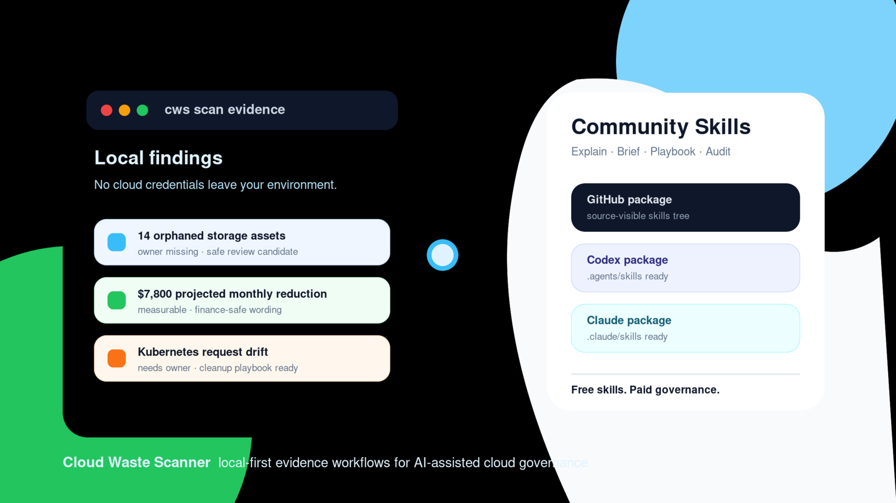

Community Skills Now Ship for GitHub, Codex, and Claude
The Community release now includes skill packages that turn local scan evidence into explanations, weekly briefs, cleanup playbooks, and export audits.

Cloud waste findings are only useful when somebody can explain them, trust them, and decide what to do next. That is why we are publishing CWS Community Skills as source-visible packages for GitHub, Codex, and Claude workflows.
The problem: reports still need translation
A scan can identify idle capacity, unattached storage, stale snapshots, and weak lifecycle controls. But many teams still lose time after the scan:
- the operator has to explain why a finding matters;
- finance needs to know which numbers are safe to count;
- the execution owner needs a cautious checklist, not a deletion command;
- the reviewer needs to know whether an export is complete enough to share.
That translation work is repetitive. It should be evidence-first, local-first, and consistent across tools.
What is included
The first Community Skills set includes four skills:
- cws-report-explainer: explains findings for operators, finance reviewers, and executives.
- cws-weekly-brief: turns current and prior evidence into a concise weekly review note.
- cws-playbook-writer: converts findings into cautious cleanup playbooks with pre-checks and rollback notes.
- cws-export-auditor: reviews exports before they are shared with finance, leadership, or audit reviewers.
Three packages, one source tree
The GitHub Community release is the source of truth. Codex and Claude packages are generated from the same skills/ source tree.
- GitHub generic package:
skills-generic.tar.gzkeeps the source-visible layout underskills/. - Codex package:
skills-codex.tar.gzinstalls under.agents/skillsand keepsagents/openai.yaml. - Claude package:
skills-claude.tar.gzinstalls under.claude/skillsand excludes Codex-specific UI metadata.
This matters because we do not want three diverging skill implementations. We want one maintained evidence workflow with platform-specific packaging.
How the evidence flows
The skills support two modes:
- Connected mode: use the installed Cloud Waste Scanner app and local API.
- File-only mode: use exported JSON, CSV, TXT, or pasted report evidence.
The new handoff manifest schema gives these skills more stable input. It includes priority breakdown, top findings, lifecycle state, confidence level, and whether an item is overdue, reopened, or unassigned.
What this enables immediately
A solo operator can now start with a scan and get a stronger follow-up package without moving cloud credentials into another service:
- an operator summary of the top urgent findings;
- a finance-safe explanation of what is measurable versus inferred;
- a weekly brief for recurring waste signals;
- a cleanup playbook that starts with pre-checks, not blind deletion;
- an export audit before sharing evidence with another reviewer.
What it does not do
Community Skills do not replace the scanner, run cloud API calls, store credentials, execute remediation, enforce approvals, or coordinate multi-user workflow state. The desktop app remains the scan engine. The skills explain and transform evidence produced by Cloud Waste Scanner.
How to try it
From the community repository, validate and build the packages:
./scripts/validate-skills.sh
./scripts/package-skills.shThe generated packages appear under dist/. The repository also includes sample evidence so users can test without exposing real cloud data:
skills/examples/handoff_manifest_1.1.0.jsonskills/examples/handoff_findings.csvskills/examples/scan_results.json
Why we are publishing this now
Cloud cost control is not only a detection problem. It is also a communication problem. A finding must become a sentence that finance can trust, a checklist an operator can follow, and a weekly rhythm that does not collapse after the first cleanup pass.
The skills release is a practical step toward that operating model while preserving the Community boundary: local-first evidence, source-visible packages, no hosted credential dependency.